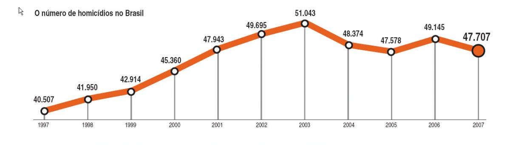
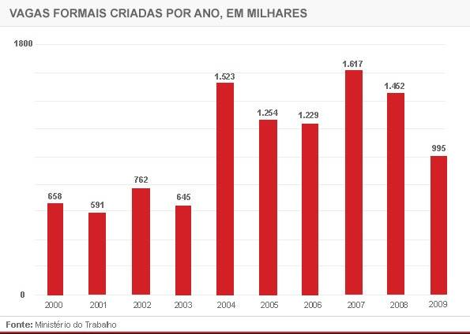

Responder a este comentário
A antiga imprensa, enfim, assume partido
por Jorge Furtado em 01 de abril de 2010Quem estava prestando atenção já percebeu faz tempo: a antiga imprensa brasileira virou um partido político, incorporando as sessões paulistas do PSDB (Serra) e do PMDB (Quércia), e o DEM (ex-PFL, ex-Arena).
A boa novidade é que finalmente eles admitiram ser o que são, através das palavras sinceras de Maria Judith Brito, presidente da Associação Nacional dos Jornais e executiva do jornal Folha de S. Paulo, em declaração ao jornal O Globo:
“Obviamente, esses meios de comunicação estão fazendo de fato a posição oposicionista deste país, já que a oposição está profundamente fragilizada.”
A presidente da Associação Nacional dos Jornais constata, como ela mesma assinala, o óbvio: seus associados “estão fazendo de fato a posição oposicionista (sic) deste país”. Por que agem assim? Porque “a oposição está profundamente fragilizada”.
A presidente da associação/partido não esclarece porque a oposição “deste país” estaria “profundamente fragilizada”, apesar de ter, como ela mesma reconhece, o irrestrito apoio dos seus associados (os jornais).
A presidente da associação/partido não questiona a moralidade de seus filiados assumirem a “posição oposicionista deste país” enquanto, aos seus leitores, alegam praticar jornalismo. Também não questiona o fato de serem a oposição ao governo “deste país” mas não aos governos do seu estado (São Paulo).
Propriedades privadas, gozando de muitas isenções de impostos para que possam melhor prestar um serviço público fundamental, o de informar a sociedade com a liberdade e o equilíbrio que o bom jornalismo exige, os jornais proclamam-se um partido, isto é, uma “organização social que se fundamenta numa concepção política ou em interesses políticos e sociais comuns e que se propõe alcançar o poder”.
O partido da imprensa se propõe a alcançar o poder com o seu candidato, José Serra. Trata-se, na verdade, de uma retomada: Serra, FHC e seu partido, a imprensa, estiveram no poder por oito anos. Deixaram o governo com desemprego, juros, dívida pública, inflação e carga tributária em alta, crescimento econômico pífio e índices muito baixos de aprovação popular. No governo do partido da imprensa, a criminosa desigualdade social brasileira permaneceu inalterada e os índices de criminalidade (homicídios) tiveram forte crescimento, como mostra o gráfico abaixo:

O partido da imprensa assumiu a “posição oposicionista” a um governo que hoje conta com enorme aprovação popular. A comparação de desempenho entre os governos do Partido dos Trabalhadores (Lula, Dilma) e do partido da imprensa (FHC, Serra), é extraordinariamente favorável ao primeiro: não há um único índice social ou econômico em que o governo Lula (Dilma) não seja muito superior ao governo FHC (Serra), a lista desta comparação chega a ser enfadonha. Abaixo, o gráfico com número de empregos formais criados:

Serra é, portanto, o candidato do partido da imprensa, que reúne os interesses da direita brasileira e faz oposição ao governo Lula. Dilma é a candidata da situação, da esquerda, representando vários partidos, defendendo a continuidade do governo Lula.
Agora que tudo ficou bem claro, você pode continuar (ou não) lendo seu jornal, sabendo que ele trabalha explicitamente a favor de uma candidatura e de um partido que, como todo partido, almeja o poder.
X
Annita Dunn, diretora de Comunicações da Casa Branca, à rede de televisão CNN e aos repórteres do The New York Times:
"A rede Fox News opera, praticamente, ou como o setor de pesquisas ou como o setor de comunicações do Partido Republicano" (...) "não precisamos fingir que [a Fox] seria empresa comercial de comunicações do mesmo tipo que a CNN. A rede Fox está em guerra contra Barack Obama e a Casa Branca, [e] não precisamos fingir que o modo como essa organização trabalha seria o modo que dá legitimidade ao trabalho jornalístico. Quando o presidente [Barack Obama] fala à Fox, já sabe que não falará à imprensa, propriamente dita. O presidente já sabe que estará como num debate com o partido da oposição."
{kind=link}
{kind=link}